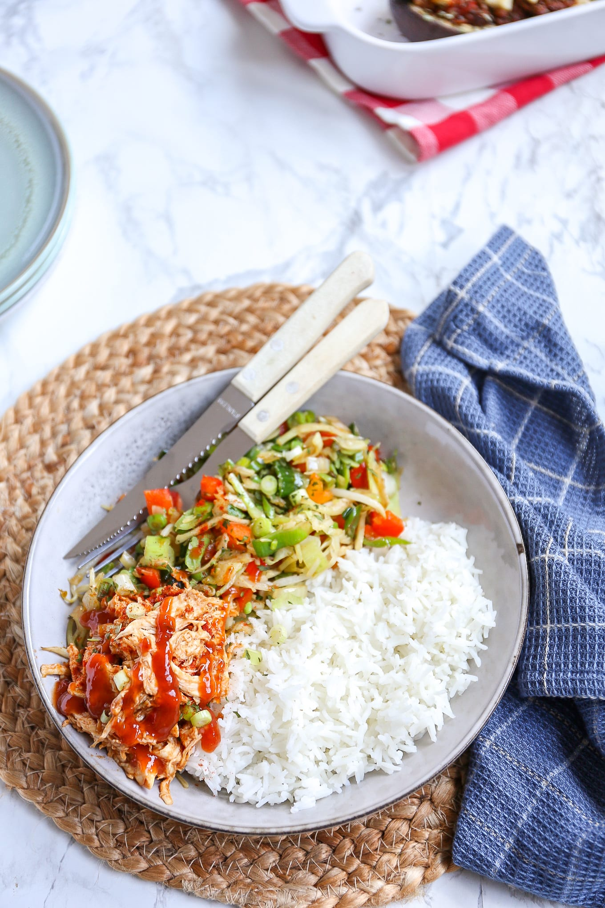

Pulled Chicken met rijst
In 30 minuten zet je dit lekkere gerecht op tafel: pulled chicken met rijst en groenten. Makkelijk om te maken en erg lekker. Je kunt dit gerecht ook prima op de volgende dag opwarmen
Ingrediënten
- 2 kipfilets
- 1 bouillonblokje (kip)
- 5 el bbq saus
- 400 gr Chinese wokgroenten
- 175 gr rijst
- 1 ui
- 2 el sojasaus
- 2 el ketjap manis
- snufje zout en peper
- lekker met gebakken uitjes
Bereidingswijze
- Kook de rijst volgens de bereidingswijze op het pak. Breng een grote pan met water aan de kook met 1 bouillonblokje (kip). Kook de kipfilets ongeveer 12-13 minuten totdat ze gaar zijn van binnen.
- Als de kipfilets gaar zijn, pluk je de kipfilets met 2 vorken uit elkaar. Je kunt dit ook doen met een elektrische mixer, dan gaat het super snel. Meng daarna de kip met de barbecue saus.
- Snipper de ui. Giet een scheutje olie in een pan en fruit de ui. Voeg na 2-3 minuten de wokgroenten toe.
- Bak de wokgroenten ongeveer 5 minuten mee en voeg dan de sojasaus en ketjap manis toe. Meng alles door elkaar en zet na een paar minuten het vuur uit. Serveer de rijst met de groenten en de pulled chicken. Lekker met nog wat gebakken uitjes er overheen.
